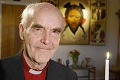

Karl Martin Andersson Lönnebo
Teol.Dr, biskop emeritus i Linköpings stift och författare.
| Född: | 1930-02-27 Storkågeträsk 5, Skellefteå lfs, Skellefteå sn. [1] | Föräldrar: Hemmansägare Nils Andersson f.1887-07-02 och h.h. Hildur Lovisa Sandström f.1887-08-06 i Kågeträsk, gifte 1914-01-18. |
|---|
| Vigsel: | omkring 1961 Uppsala domkyrko fs, Uppsala. [2] |
|---|
| Levde: | 1970 Uppsala domkyrko fs, Uppsala. [2] |
|---|
Noteringar
Martin Lönnebo
Martin Lönnebo, född 27 februari 1930 i Storkågeträsk, Västerbottens län, biskop emeritus i Linköpings stift, författare.
Lönnebo disputerade 1964 på doktorsavhandlingen Albert Schweitzers etisk-religiösa ideal.
1980 vigdes Lönnebo till biskop i Linköpings stift. Han gick i pension 1995.
Bibliografi
2005 - Väder, vind & livets allvar (tillsammans med Tomas Sjödin)
2004 - Om konsten att hänga handskarna på en solstråle
2004 - Tröstängeln
2002 - Dopängeln
1999 - Själen: lilla träningsboken för själen
1997 - Ikonens spiritualitet
1996 - Frälsarkransen: övning i livsmod, livslust, självbesinning och i att leva nära Gud
1993 - Det odelade hjärtat
1989 - Det visa hjärtat: legender, myter, drömmar
1986 - Se människan
1982 - Kristendomens återkomst
1980 - Den underbara trädgården
1980 - Vår frälsares väg till korset: korsvägsandakter
1977 - Homiletik : En introduktion i kyrkans förkunnelse (2:a upplagan)
1975 - Religionens fem språk : religionens mening och förnyelse
1970 - Den första bönen
1970 - En vecka med Gud: dagar inneslutna i Herrens bön
1967 - Att finna sig själv, att finna Gud
Roger Larsson Frälsningsarmén, Anja Pärson, Ingemar Stenmark, Henning Sjöström, Martin Lundström, Assar Rönnlund, Torgny Lindgren, Sara Lidman, Lars Lundkvist och P-O Enquist samt... Martin Lönnebo, f.d. biskopen ...
MARTIN LÖNNEBO 75 år
Söndagen 27 februari
Läs om hur han firar dagen: i Norrköpings Tidningar
Martin Lönnebo växte upp som det åttonde barnet i en bondefamilj i Kågeträsk, Västerbotten på 1930-talet. Föddes 27 februari 1930. Yngst av åtta syskon. Han tjänade bl a som bonddräng men fick möjligheten att läsa vidare och började med filosofi. Sådan är också hans gärning: kombinationen av det jordiskt praktiska och det andliga tänkandet och reflektionen över skapelsen.
En kort sejour som EFS-predikant i Bohuslän. Doktorsavhandling om Albert Schweitzer. Engagemang i handikapprörelse och miljörörelse. Ökenäventyr när han gick vilse på Sinai och var nära att dö …
Som biskop i Linköping mellan åren 1980-1995 blev han snart mycket känd över hela landet med sin blida men konsekventa personlighet som tjänat som andlig förebild för många människor.
En av hans viktiga deviser är att andlighet måste övas! Förutsättningen för Lönnebos andlighet är att han står med båda fötterna på jorden, lever i världen, men inte av den.
Hur ser pensionären Lönnebos vardag ut? Frågas i en intervju när han pensionerats och Lönnebo berättar: Stressar inte. Stiger upp när man behöver. Först samlar han tankarna. Äter gröt, klassisk musik och lingonsylt är bra på morgonen. Om jag sedan inte skall resa iväg någonstans för att undervisa så går jag kanske till datorn och skriver på en bok. Tröttnar jag så lägger jag mig ett tag på soffan tills det blir kaffedags. På kvällen samlar jag mina tankar innan det blir TV-Aktuellt klockan 18. Man måste följa med i tiden. Sedan blir det promenad eller jogging, lite sport i TV, en stunds begrundan över dagen som varit och så somnar jag vid 23-tiden. Men en annan dag kanske jag ägnar mig åt att gräva i trädgården. Laga mat har jag blivit rätt bra på om jag bara får viss handledning, jag har lärt mig att följa recepten.
I en intervju Aftonbladet 1999 med akademiledamoten Torgny Lindgren född i Raggsjö Västerbotten berättar Lindgren:
Jag har sett ett stamträd som börjar med en karl på 1700-talet, jag har glömt hans namn. Men följer man grenverket ner till sista raden blir det rätt intressant. Där står till exempel jag själv, förre biskopen Martin Lönnebo, Sara Lidman, Lars Lundkvist och P-O Enquist. Vi är släkt på långt håll allihop.
fredman.se/fredman.se/pdfgallery-ac-authors.html
Där finns en stamfader Zackris Nilsson född 1675 och anfader till författarna som nämnts ovan. Detta är om inte annat så en mycket märklig plantskola för Västerbottensförfattare...
Martin Lönnebo har berättat om hur han som liten hade han de starkaste upplevelserna av Gud i naturen, när han satt i en eka på en blank sjö eller gick under en norrskenshimmel. När himmel och jord var nära. Jag tänkte att allt detta är Guds hus. Här hör jag hemma. Det lilla, enkla och det stora är så sammanbundet.
Personhistoria
Dokument
Källor
| [1] | Skellefteå lfs Födda AC 225/1930 k.9/15, AIIA:25 (1926-1930) s.209 k.5/8 |
| |
| | |
| [2] | Mtl Uppsala län 1971 |
| |
| | |
| [3] | Fällfors C:1 (1913-1939) 22/1936 fol. 268 |
| |
| | |
| [4] | NV - Dödsannonsregistrering 1963-01-12 |
| |
| | |
| [5] | RTB 76, MTL 71 |
| |
|
|  |
2008-02-23. Martin Lönnebo, Biskop emeritus. Helgmålsringning hemma hos Martin Lönnebo
Foto: Johannes Söderberg/SVT
|
|
{kind=link}